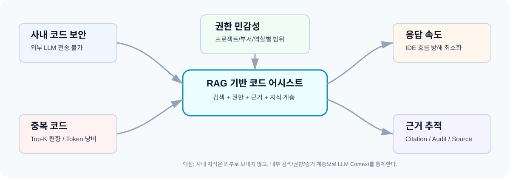
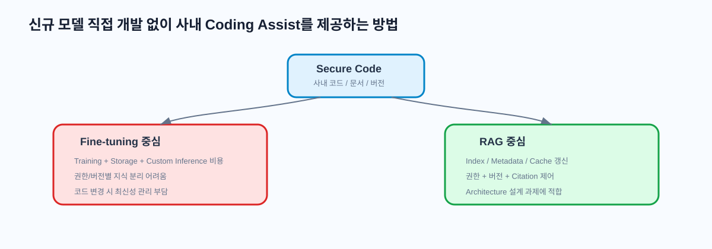
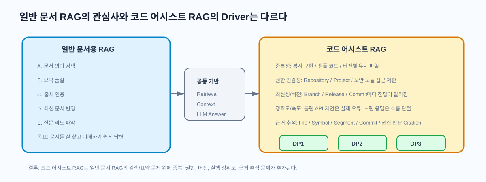
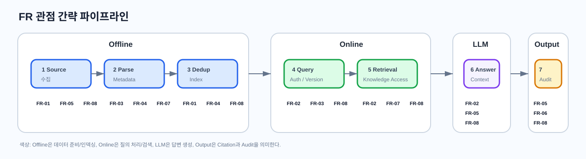
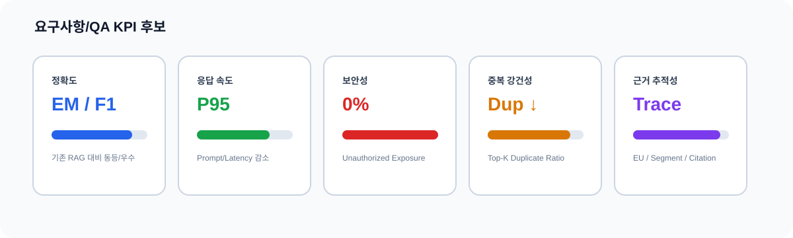
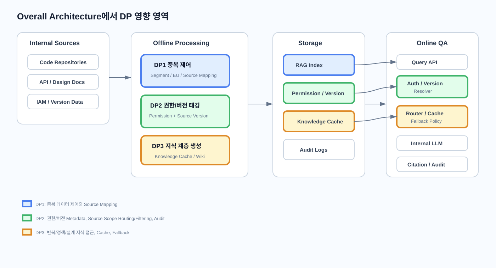
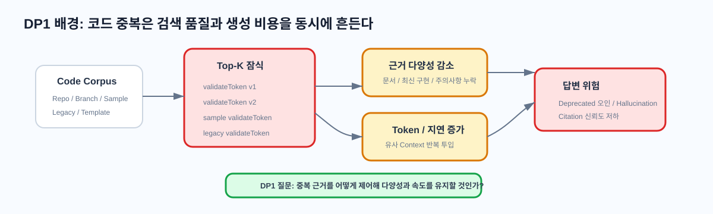
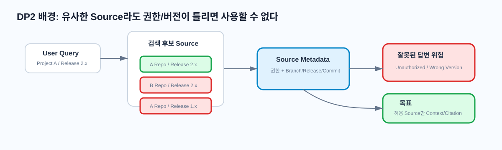
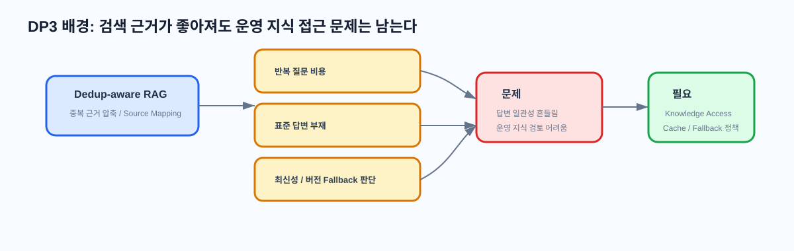

RAG 기반 코드 어시스트 프레임워크 Architecture
사내 코드 보안, 권한 정합성, 중복 데이터 강건성, 응답 속도를 동시에 다루는 설계 과제

핵심 한 줄
외부 LLM에 사내 코드를 보내지 않고, 내부 RAG 지식 계층으로 코드 어시스트 품질을 확보한다.
3개 Design Point
DP1 중복 제어DP2 권한/버전DP3 Knowledge Access
발표 Tone
실제 구현 완료가 아니라 Architecture 판단과 Trade-off를 설명하는 설계 발표다.
과제 배경 1: 외부 LLM을 그대로 쓰기 어려운 이유
보안과 지식재산권, 사내 코드 지식 부족, Fine-tuning 부담
보안/IP 보호
- 사내 코드는 핵심 자산
- 외부 LLM 전송 시 정책 위반 위험
- 질의/로그/Context까지 통제 필요
사내 지식 부족
- 외부 모델은 내부 API/프레임워크를 모름
- 프로젝트별 규칙과 설계 제약 미반영
- 그럴듯하지만 틀린 답변 위험
모델 개발 부담
- 전용 모델 학습 비용 큼
- 코드 변경 시 재학습 부담
- 지식을 파라미터에 고정하면 최신성 불리
과제 배경 2: Fine-tuning vs RAG
신규 모델을 직접 개발하지 않으면서 사내 보안 데이터를 활용하는 방법 비교

| 구분 | Fine-tuning 중심 | RAG 중심 |
|---|---|---|
| 핵심 아이디어 | 사내 데이터로 모델 가중치를 추가 학습 | 사내 코드/문서를 검색해 LLM Context로 제공 |
| 최신성 | 코드 변경 시 재학습/추가 튜닝 부담 가능 | Index, Metadata, Cache 갱신으로 대응 |
| 권한/버전 | 학습된 지식 안에 사용자별 권한을 분리하기 어려움 | Query-time 권한/버전 제어와 Citation 가능 |
| 비용 구조 | 학습 데이터 준비, Training, Custom Model Storage/Inference 비용 | 인덱싱, 검색, LLM 호출, Cache 운영 비용 |
| 본 과제 적합성 | 모델 개발/운영 과제에 가까움 | Architecture 설계 과제 범위에 적합 |
과제 배경 3: 일반 문서 RAG와 코드 어시스트 RAG의 관심사
일반 문서 RAG의 주요 관심사와 코드 어시스트 RAG의 Architecture Driver는 다르다

일반 문서용 RAG에서 주로 중요한 것
- 문서 의미 검색: 질문과 가까운 단락을 찾는 능력
- 요약 품질: 긴 문서를 이해하기 쉬운 답변으로 압축
- 출처 인용: 어떤 문서에 근거했는지 확인
- 최신 문서 반영: 오래된 정책/FAQ 사용 방지
- 질문 의도 파악: 필요한 문서 범위 선택
코드 어시스트 RAG에서 강해지는 Driver
- 중복성: 유사 코드가 Top-K를 잠식
- 권한 민감성: Repository/Project/보안 모듈별 접근 제한
- 최신성/버전: Branch/Release/Commit마다 정답이 다름
- 정확도: API Signature와 호출 순서 오류가 실제 장애로 연결
- 응답 속도: IDE 흐름 안에서 짧은 지연 필요
- 근거 추적: File/Symbol/Segment/Commit/Citation 필요
| 코드 어시스트 Driver | 왜 중요한가 | 연결 DP |
|---|---|---|
| 중복성 | 복사 구현, 샘플 코드, 버전별 유사 파일이 Top-K를 잠식하면 필요한 근거가 누락된다. | DP1 |
| 권한 민감성 | 권한 없는 코드가 답변이나 로그에 섞이면 보안 사고가 된다. | DP2 |
| 최신성/버전 | 요청 Branch/Release/Commit과 다른 구현은 틀린 답변이 될 수 있다. | DP2, DP3 |
| 정확도/응답 속도 | 틀린 코드 제안은 빌드/런타임 오류로 이어지고, 느린 응답은 개발 흐름을 끊는다. | DP1, DP3 |
| 근거 추적 | 답변 근거의 파일, Symbol, Segment, Commit, 권한 판단을 확인할 수 있어야 한다. | DP1, DP2, DP3 |
과제 간략 소개: RAG 기반 코드 어시스트 프레임워크
수집, 중복 제어, 권한/버전 제어, Knowledge Access, Citation을 포함한 설계 범위
| 프레임워크 역할 | 설명 |
|---|---|
| 수집/인덱싱 | Repository, API 문서, 설계 문서, README 등을 검색 가능한 구조로 변환 |
| 중복 제어 | 유사 Segment가 Top-K를 잠식하지 않도록 RAG 구조를 결정 |
| 권한/버전 제어 | 사용자 권한과 요청 Source Version 범위 내에서만 검색/답변 Context 구성 |
| Knowledge Access | 반복/정책/설계 질문의 속도와 일관성을 높이는 지식 접근 방식 결정 |
| 근거 추적 | 원본 Segment, Source Version, 권한 판단 로그를 Citation/Audit로 연결 |
요구사항 1: Stakeholder와 관심사
개발자, 개발팀, Architect, 보안, 운영, LLM 조직, 평가자의 Concern
| Stakeholder | 관심사 | 관련 DP |
|---|---|---|
| 사내 개발자 | 빠르고 정확한 코드 어시스트, 내부 API 예시, 신뢰 가능한 답변 | DP1, DP3 |
| 프로젝트 개발팀 | 보안 유지, 생산성 향상, 팀별 코드 규칙 반영 | DP2, DP3 |
| Software Architect / Tech Lead | 설계 원칙 준수, 코드 품질, Architecture Decision 근거 추적 | DP1, DP3 |
| 보안 담당 조직 | 코드 외부 유출 방지, 접근 권한 준수, 감사 가능성 | DP2 |
| 플랫폼/인프라 운영팀 | 인덱스 갱신, 장애 대응, 확장성, 운영 복잡도 | DP1, DP2, DP3 |
| 교육/양성과정 평가자 | DP 비교 명확성, QA 기반 Trade-off, 설계 논리 타당성 | 전체 |
요구사항 2: Functional Requirements
필수 기능과 DP 연결
| ID | Rank | Functional Requirement | 관련 DP |
|---|---|---|---|
| FR-01 | P1 | 코드/문서 데이터 수집 및 인덱싱 | DP1, DP2 |
| FR-02 | P1 | 코드 어시스트 질의 처리 | DP1, DP2, DP3 |
| FR-03 | P1 | 권한 기반 검색 및 답변 제어 | DP2 |
| FR-04 | P1 | 중복 데이터 제어 | DP1, DP3 |
| FR-05 | P2 | 근거 코드/문서 Citation 제공 | DP1, DP2, DP3 |
| FR-06 | P2 | 기존 사내 코드 어시스트 툴 연동 API 제공 | DP2, DP3 |
| FR-07 | P3 | Knowledge Cache / Wiki 관리 | DP3 |
| FR-08 | P2 | Source Version 기반 검색/답변 제어 | DP2, DP3 |

| FR | 1 수집 | 2 Metadata | 3 Index | 4 Query/Auth/Version | 5 Retrieval/Knowledge | 6 Answer | 7 Citation/Audit |
|---|---|---|---|---|---|---|---|
| FR-01 수집/인덱싱 | O | O | O | ||||
| FR-02 질의 처리 | O | O | O | O | |||
| FR-03 권한 제어 | O | O | O | O | O | O | |
| FR-04 중복 제어 | O | O | O | O | O | ||
| FR-05 Citation | O | O | O | O | O | O | O |
| FR-06 Tool API | O | O | O | O | |||
| FR-07 Knowledge Cache | O | O | O | O | O | ||
| FR-08 Source Version | O | O | O | O | O | O | O |
요구사항 3: 제약사항과 설계 원칙
핵심 제약은 사내 코드와 설계 정보의 외부 유출 금지
CON-01 사내 코드 외부 유출 금지
사내 소스코드, 설계 문서, 내부 API 정보는 외부 LLM 서비스나 외부 저장소로 전송되어서는 안 된다.
권한/버전 제어Citation/Audit내부 RAG
요구사항 4: Quality Attributes와 KPI
정확도, 속도, 보안성, 권한 정합성, 중복 강건성, 추적성

| QA | Rank | 한 줄 KPI | 근거 |
|---|---|---|---|
| QA-01 정확도 | H | 평가 Query Set에서 EM/F1 또는 RAGAS Faithfulness가 Baseline RAG 이상이어야 한다. | RAGAS 논문 지표 참고 |
| QA-02 응답 속도 | H | 일반 QA P95는 5초 이내, Wiki/Cache Hit 질의는 2초 이내를 목표로 한다. | [Expected, 측정 필요] |
| QA-03 보안성 | H | 권한 없는 Chunk가 검색 결과, Context, 답변, 로그에 포함되는 비율은 0%여야 한다. | [Required] |
| QA-04 권한/버전 정합성 | H | 권한/버전 Scenario Set에서 Allowed Result Sufficiency@10 90% 이상, Wrong Version Citation 0%를 목표로 한다. | [Expected, 측정 필요] |
| QA-05 중복 강건성 | H | 중복성 높은 Dataset에서 Top-K Duplicate Ratio 20% 이하 또는 Context Diversity@10 7개 이상을 목표로 한다. | [Expected, 측정 필요] |
| QA-08 근거 추적성 | M | 답변 근거의 Repository/File/Symbol/Segment/Commit/권한 판단 Citation Trace Coverage 95% 이상을 목표로 한다. | [Expected, 측정 필요] |
Overall Architecture: DP 영향 영역 표시
DP1/DP2/DP3가 전체 구조에서 어느 부분을 결정하는지 색상으로 표시

| 색상 | DP | 영향 영역 |
|---|---|---|
| Blue | DP1 | Segment 추출, 중복 제어 근거 단위, Source Mapping, 중복 제어 Index |
| Green | DP2 | Permission/Version Metadata, Auth/Version Resolver, Source Scope Routing/Filtering, Audit |
| Amber | DP3 | Answer Cache, Wiki Page Index, Wiki/EU Retrieval, Context Policy |
DP1 배경: 중복 데이터에 강한 RAG 구조 필요
Top-K 편향, Context Token 낭비, Deprecated 코드 오인 위험
Stakeholder: 개발자 / Architect / 운영팀FR-01FR-02FR-04FR-05QA-01 정확도QA-02 속도QA-05 중복 강건성

문제 예시
Top-5: 1. LoginManager.cpp validateToken() 2. LoginManager_v2.cpp validateToken() 3. LegacyLoginManager.cpp validateToken() 4. sample/LoginManager.cpp validateToken() 5. copied/LoginManager.cpp validateToken()
설계 질문
중복이 많은 코드 데이터에서 Top-K 편향과 Hallucination을 줄이기 위해 어떤 RAG 구조를 사용할 것인가?
중복 강건성Prompt 감소Citation
DP1 대안 비교: Naive RAG vs RAPTOR vs SPRAG EU
선택안은 SPRAG 기반 Evidence Unit Offline Dedup-aware RAG
A. Naive RAG
장점: 단순, 빠른 PoC, 운영 복잡도 낮음
단점: 중복 코드에 취약, Top-K 편향, Token 낭비
B. RAPTOR-style
장점: 장문/대규모 문서의 상위 구조 활용
단점: 코드 세부 Symbol 손실, 중복제어가 직접 목적은 아님
C. SPRAG Evidence Unit
장점: Index-time 중복 처리, Prompt/Latency 감소, Source Mapping
단점: Offline 비용, EU 압축 오류, 동적 Corpus 대응 필요
| QA | Naive | RAPTOR | SPRAG EU | 별점 기준 KPI / 근거 |
|---|---|---|---|---|
| 정확도 | ★☆☆ | ★★☆ | ★★★ | ★ 근거 누락 잦음 / ★★ 일부 완화 / ★★★ EM·F1·Faithfulness Baseline 이상. 근거: RAGAS + 내부 평가 필요 |
| 응답 속도 | ★☆☆ | ★★☆ | ★★★ | ★ 중복 Prompt 증가 / ★★ 요약으로 일부 감소 / ★★★ Prompt Length와 P95 Latency 감소. 근거: SPRAG 제공 요약 + 측정 필요 |
| 중복 강건성 | ★☆☆ | ★★☆ | ★★★ | ★ Top-K Duplicate 높음 / ★★ Cluster로 일부 완화 / ★★★ Duplicate Ratio 20% 이하 목표. 근거: [Expected] |
| 근거 추적성 | ★★☆ | ★★☆ | ★★★ | ★ Source 연결 약함 / ★★ Chunk 연결 / ★★★ EU와 원본 Segment Mapping 유지. 근거: Citation Trace Coverage |
| KPI | Naive | RAPTOR | SPRAG EU |
|---|---|---|---|
| Top-K Duplicate Ratio | [Expected] 35~60% | [Expected] 20~40% | [Expected] 10~20% |
| Context Diversity@10 | [Expected] 4~6 | [Expected] 5~7 | [Expected] 7~9 |
| Prompt Length Reduction | 기준값 | 일부 감소 | [Provided Summary] HIGH-HIGH 63~82% |
| Citation Trace Coverage | [Expected] 70~85% | [Expected] 75~90% | [Expected] 90~98% |
DP2 배경: 권한/버전 기반 Dataset / Retrieval Strategy
정확한 검색도 권한과 Source Version이 맞지 않으면 사용할 수 없다
Stakeholder: 개발팀 / 보안 / 운영팀FR-03FR-05FR-06FR-08QA-03 보안성QA-04 권한/버전QA-08 추적성

| 상황 | 위험 | 필요한 Architecture 대응 |
|---|---|---|
| A 개발자는 A Repository만 접근 가능 | B Repository 코드가 답변에 섞이면 보안 사고 | Query-time Auth Resolver |
| 같은 API가 Release 1.x와 2.x에 모두 존재 | 요청 버전과 다른 구현을 Citation으로 제시할 수 있음 | Version Resolver / Source Scope |
| 통합 검색 결과에 여러 Project/Branch가 섞임 | 후속 답변과 로그에 권한 없는 Source가 남을 수 있음 | Source Metadata 기반 검증 |
DP2 대안 비교: Source Routing vs Post-filtering
후보는 A/B 두 개만 비교하고, 권한 + 버전 + 출처 Metadata 관점으로 판단
A. Source Routing / 분리 Index
장점: 검색 전에 권한/버전 경계가 결정되어 보안성과 버전 정합성이 명확
단점: Scope 조합, Index 운영, 결과 병합/정규화 복잡
B. Source Metadata Post-filtering
Permission + Version] F-->K[Final Top-K + Citation]
장점: 통합 운영이 단순하고 Citation Metadata를 재사용하기 좋음
단점: 권한 없는 후보가 중간 결과에 들어오고 결과 부족/로그 노출 위험
| QA | A. Source Routing | B. Post-filtering | 별점 기준 KPI / 근거 |
|---|---|---|---|
| 보안성 | ★★★ | ★★☆ | ★ 중간 결과 노출 위험 큼 / ★★ 최종 답변 통제 / ★★★ Unauthorized Exposure 0%와 검색 Scope 제한. 근거: 보안 요구 [Required] |
| 권한/버전 정합성 | ★★★ | ★★☆ | ★ Wrong Version 잦음 / ★★ Metadata 의존 / ★★★ Wrong Version Citation 0%, Routing Accuracy 95%+. 근거: [Expected, 측정 필요] |
| 근거 추적성 | ★★☆ | ★★★ | ★ Trace 부족 / ★★ Scope Audit 가능 / ★★★ Source Metadata 기반 Citation Trace 95%+. 근거: FR-05/FR-08 |
| 운영성/확장성 | ★★☆ | ★★★ | ★ Index 조합 폭발 / ★★ Scope 재사용 필요 / ★★★ 단일 Index 중심 운영. 근거: Index Operation Count |
| KPI | A. Source Routing / 분리 Index | B. Post-filtering |
|---|---|---|
| Unauthorized Exposure | [Required] 0% 목표 | [Required] 0% 목표이나 중간 결과 통제 필요 |
| Wrong Version Citation | [Required] 0% 목표 | [Required] 0% 목표이나 Metadata 품질 의존 |
| Allowed Result Sufficiency@10 | [Expected] 80~95% | [Expected] 50~80% |
| 운영 Index/Scope 수 | 권한/버전 Scope 수에 비례 | 1개 중심 |
| Citation Trace Coverage | [Expected] 90% 이상 | [Expected] 95% 이상 |
DP3 배경: EU-only RAG 이후 남는 반복 질문 문제
정확한 근거 조각은 확보했지만, 반복 질문마다 여러 EU를 다시 조합해야 한다
Stakeholder: 개발자 / Architect / 운영팀 / LLM 운영 조직FR-02FR-05FR-07FR-08QA-02 속도QA-06 유지보수성QA-08 추적성

EU-only RAG에서 반복되는 조합
AuthClient 질문 예시 EU-1 init() signature EU-2 validation behavior EU-3 deprecated note EU-4 release/2.x migration EU-5 sample usage
DP3의 핵심 질문
반복 질문에 대해 기존 답변을 재사용할 것인가, 아니면 EU 기반으로 미리 정리한 Topic-level Knowledge를 검색 근거로 추가할 것인가?
Top-K 슬롯 효율답변 일관성Citation 유지
| 남는 문제 | 왜 중요한가 | DP3 평가 기준 |
|---|---|---|
| 반복 질의 비용 | 같은 주제 질문마다 EU 검색, rerank, context 구성, LLM 생성을 반복 | Cache/Wiki hit 시 비용 절감 여부 |
| Top-K 슬롯 비효율 | 여러 EU가 같은 Topic의 하위 정보로 소비되어 보완 근거를 넣기 어려움 | Context token, Topic Coverage@K |
| 답변 일관성 부족 | 매번 선택되는 EU 조합이 달라지면 권장 방향과 표현이 흔들릴 수 있음 | Repeated Answer Consistency |
| 근거 추적 필요 | 코드 어시스트 답변은 원본 EU/source까지 추적되어야 함 | Citation Trace Coverage |
DP3 대안 비교: Semantic Answer Cache vs LLM Wiki
선택안은 EU 기반 Wiki Page Index를 추가하는 LLM Wiki Knowledge Cache
A. Semantic Answer Cache
핵심: 과거 질문의 최종 답변을 재사용한다.
장점: 구현이 쉽고 cache hit 이후 매우 빠름
위험: cold-start와 wrong answer reuse
B. LLM Wiki Knowledge Cache
핵심: EU 기반 Topic-level 지식 근거를 추가한다.
장점: Top-K 슬롯 효율, 답변 일관성, cold-start 대응
위험: stale wiki와 손실 요약
| 기준 | Semantic Answer Cache | LLM Wiki + EU RAG |
|---|---|---|
| 재사용 대상 | 과거 질문의 최종 답변 | EU 기반 Topic-level Wiki Page |
| Cold-start | 과거 질문이 없으면 약함 | offline Wiki 생성으로 첫 질문부터 사용 가능 |
| 질문 변형 대응 | Embedding threshold에 의존, wrong hit 위험 | 같은 Wiki Topic을 근거로 질문별 답변 생성 |
| Top-K 효율 | 개선 제한적 | Wiki 하나가 여러 EU의 핵심을 압축해 슬롯 효율 개선 |
| Citation | Cached answer에 별도 저장 필요 | Wiki metadata의 source_eu_ids와 EU 보강으로 유지 |
| 성능 이득 | Hit 시 RAG/LLM 생략 가능 | Context token 감소, Topic Coverage@K, 답변 일관성 개선 |
| QA | A. Semantic Answer Cache | B. LLM Wiki + EU RAG | 별점 기준 KPI / 근거 |
|---|---|---|---|
| QA-02 응답 속도 | ★★★ | ★★☆ | ★ 기본 개선 제한 / ★★ Context token 감소 / ★★★ Hit 후 RAG·LLM 생략 또는 P95 2초 이내. Answer Cache는 hit 이후 최단 latency가 강점 |
| QA-06 유지보수성 | ★★☆ | ★★★ | ★ 과거 답변 축적 중심 / ★★ TTL·metadata 관리 / ★★★ Topic Wiki, source_eu_ids, last_verified_commit으로 지식 단위 관리 |
| QA-08 근거 추적성 | ★★☆ | ★★★ | ★ Citation 누락 위험 / ★★ cached answer metadata 보존 / ★★★ Wiki source_eu_ids + EU 보강으로 Citation Trace Coverage 95%+ 목표 |
| QA-01 정확도 | ★★☆ | ★★★ | ★ Wrong cache hit 위험 / ★★ threshold·metadata 검증 / ★★★ EU 기반 Wiki 근거로 질문별 답변 생성, Faithfulness·Key Point Coverage 측정 |
| QA-04 권한/버전 | ★★☆ | ★★☆ | 두 후보 모두 metadata validation 필수. Cache는 key·TTL, Wiki는 release_range·last_verified_commit 관리. Wrong Version Citation 0% 목표 |
| PoC 지표 | 비교 의미 | 기대 관찰 |
|---|---|---|
| First Query Success Rate | 과거 cache가 없는 첫 질문 대응 | LLM Wiki 우위 |
| Wrong Cache Hit Rate | 비슷하지만 다른 질문에 기존 답변을 재사용하는 비율 | Semantic Cache 리스크 확인 |
| Topic Coverage@K | Top-K가 필요한 하위 주제를 얼마나 포함하는지 | LLM Wiki + EU 우위 |
| Repeated Answer Consistency | 같은 Topic 질문의 권장 방향 일관성 | LLM Wiki 우위 기대 |
| Context Token Count | LLM 입력 Context 크기 | Wiki+EU에서 반복 설명 질문 감소 기대 |
Appendix DP3: Mechanism & PoC Design
LLM Wiki 생성 방식, Context 정책, 비교 테스트 시나리오를 PoC 기준으로 정리
LLM Wiki 자동 생성
- EU metadata와 text에서 Topic 후보 추출
- 관련 EU 묶음을 LLM Wiki Builder에 입력
- 사용 시점, 권장 방식, Deprecated note, version note 생성
- source_eu_ids, release_range, allowed_scope를 metadata로 연결
- Wiki Page를 embedding해 Wiki Index 저장
Context 구성 정책
Final Context Policy - Wiki result max: 1 - EU result min: 3 - usage/guideline: best Wiki + EU evidence - implementation/exact code: EU 중심, Wiki optional
핵심 방어 문장
LLM Wiki는 RAG를 우회하지 않는다. SPRAG EU에서 생성한 Wiki Page를 별도 Index로 추가하고, Online에서는 Wiki Index와 EU Index를 함께 검색한다.
| 구분 | DP1 SPRAG | DP3 LLM Wiki Knowledge Cache |
|---|---|---|
| 설계 질문 | 원본 코드/문서를 어떤 근거 단위로 쪼개고 중복을 줄일 것인가? | 반복 질문에 필요한 대표 지식 계층을 둘 것인가? |
| 산출물 | Evidence Unit | Topic-level Wiki Page |
| 최적화 대상 | Retrieval corpus 품질, 중복 강건성, Source Mapping | 반복 질의 비용, 답변 일관성, Top-K 슬롯 효율 |
| Online 역할 | EU Index의 검색 대상 제공 | Wiki Index를 EU Index와 함께 검색하고 Context Policy에 반영 |
| 평가 지표 | Top-K Duplicate Ratio, Context Diversity, Citation Mapping | First Query Success, Repeated Answer Consistency, Topic Coverage@K, Context Token Count |
| 테스트 시나리오 | 질문 예시 | 측정값 |
|---|---|---|
| Cold-start 반복 질문 | AuthClient는 언제 써야 해? / 초기화는 어떻게 해? | First Query Success, Latency, Citation Coverage |
| 질문 표현 변형 | 인증 클라이언트 사용 기준 / 로그인 처리에서 쓰는 이유 | Same-topic Grounding, Answer Consistency |
| 비슷하지만 다른 질문 | 언제 써야 해? vs 쓰면 안 되는 경우는? | Wrong Cache Hit, Contradiction Rate |
| Top-K 슬롯 효율 | EU-only Top-K와 Wiki+EU Top-K 비교 | Topic Coverage@K, Context Token, Completeness |
Semantic Cache가 유리한 경우
- 같은 질문이 매우 자주 반복됨
- 질문 의도가 거의 동일함
- 최단 latency가 가장 중요함
- 과거 답변의 citation metadata가 안정적으로 저장됨
LLM Wiki가 유리한 경우
- 첫 질문부터 표준 사용법 답변이 필요함
- 질문 표현은 다르지만 같은 Topic을 묻는 경우가 많음
- 여러 EU의 핵심을 압축한 대표 근거가 필요함
- EU citation과 함께 답변 일관성을 높여야 함
Appendix DP4: Session Memory Handoff Strategy
긴 멀티턴 대화의 결정, 요구사항, TODO를 다음 세션으로 안전하게 넘기는 확장 DP 후보
Extension DPSession MemoryQA-02 속도QA-06 유지보수성QA-08 추적성
A. Session LLM Wiki
핵심: 세션/milestone 단위 Wiki Page 생성
강점: 사람이 읽기 쉽고 다음 세션 recall에 강함
위험: 요약 오류, 임시 의견 고착
B. Episodic Vector Memory
핵심: 결정/선호/TODO를 작은 memory item으로 저장
강점: 세밀한 recall, 낮은 검색 비용
위험: memory pollution, 전체 맥락 약화
C. Event-sourced Ledger + Summary
핵심: 원본 ledger를 source of truth로 두고 summary/snapshot 사용
강점: 검증 가능성, 결정 추적성
위험: 구현 복잡도, privacy/retention 부담
| 기준 | Session LLM Wiki | Episodic Vector Memory | Ledger + Rolling Summary |
|---|---|---|---|
| 재사용 단위 | 세션/주제별 Wiki Page | 작은 memory item | 원본 ledger + summary/snapshot |
| 생성 시점 | session end, milestone, explicit save | turn/window마다 가능 | turn마다 ledger 저장, window마다 summary |
| 정확성 | 요약 품질에 의존 | memory extraction 품질에 의존 | 원문 fallback으로 가장 검증 가능 |
| 사람 검토 | 좋음 | item이 많아지면 어려움 | snapshot 중심 검토 가능 |
| PoC 난이도 | 중간 | 낮음~중간 | 중간~높음 |
| QA | Session LLM Wiki | Episodic Memory | Ledger + Summary | 판단 |
|---|---|---|---|---|
| QA-01 정확도 | ★★☆ | ★★☆ | ★★★ | Ledger는 source turn fallback으로 검증 가능성이 가장 높음 |
| QA-02 응답 속도 | ★★☆ | ★★★ | ★★☆ | Memory item 검색이 가장 가볍고 빠름 |
| QA-06 유지보수성 | ★★★ | ★★☆ | ★★☆ | Wiki Page는 사람이 읽고 수정하기 쉬움 |
| QA-08 근거 추적성 | ★★☆ | ★★☆ | ★★★ | Ledger는 어떤 turn에서 결정이 나왔는지 추적 가능 |
| Privacy / Retention | ★★☆ | ★★☆ | ★☆☆ | Ledger는 원문 대화 보존 부담이 가장 큼 |
| PoC 시나리오 | 질문 예시 | 측정값 |
|---|---|---|
| 이전 결정 recall | 어제 DP3 최종 후보가 뭐였지? | Decision Recall Accuracy |
| 폐기 후보 방지 | Graph-based Knowledge Map은 왜 제외했지? | Rejected Option Recall |
| 다음 작업 이어가기 | 마지막에 남은 TODO가 뭐였지? | Task Continuation Success |
| 충돌 처리 | 이전에는 A였는데 지금은 B로 바꾸자 | Conflict Detection Rate |